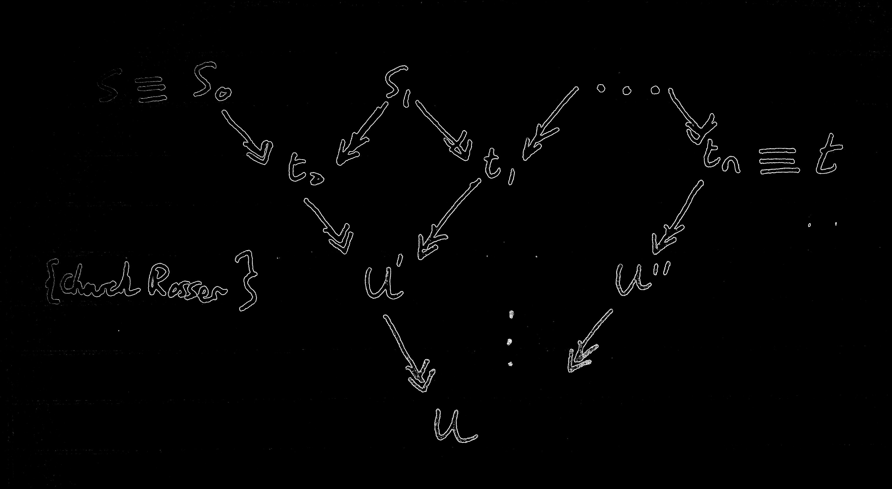

← Home
Lambda Calculus
Contents
- Rules of λβ
- Equality of →β
- Head Reduction and OTHER reductions! 😮
- Consistency
- Genericity Lemma
- Combinators
- Y Combinator
- Church Numerals
- Scott's Curry Theorem 🍛🍛🍛
- Functions - Recursive or otherwise
- Combinatory Logic
- Combinatory Algebras
- Types
- Typability
- Robinson's Unification Algorithm
- Principal type algorithm
- Undecidability Results
Rules of λβ
s=t
----- Symmetry
t=s
s = t t = u
---------- Transitivity
s = u
etc, etc...
So λβ|- s=t is not defined as =β but they are provably equivalent.
λβ|- s=t is defined as:
Symmetry, transitivity, reflexivity
Application, abstraction, β-reduction.
and
=β is the reflexive, symmetric, transitive closure of →β
Exercise: show =β implements λβ
First recursion theorem:
∀f∈Λ ∃u∈Λ st fu = u
Second recursion theorem:
∀f ∃u st f[[u]]=u
β Equality, reflexive transitive closure of →β
Diagram of the two way equality.

Just prove it using the diagram and make use of Church-Rosser.
The precise thing would be: At each level we reduce to one less term. So after n-1 levels we have only 1 term.
Head Reduction
This is HNF:
s ≡ λx1...xn . y s1...sm
Head Reduction:
λx0...xn . (λy.u)t s0•...•sm →h λx0...xn . u[t/y]•s0•...•sm
An application can
A headmost reduction is always a LEFTMOST reduction. And it's bloody obvious what a leftmost reduction is.
Solvable IFF HNF
Internal reduction
A β reduction that isn't a head reduction.
Other Reductions.
Leftmost - Not even going to define this. DBI.
Standard - Once something is reduced, nothing to the left of that is reduced.
(Standard is a property of a whole reduction).
A standard deduction has to precede from the left, but not necessarily leftmost!
Head and leftmost reductions are standard. #standard.
Some results
- Every standard reduction sequence ending in a normal form is leftmost.
- If s has a β normal form. Then standard reduction is sufficient (specifically leftmost is sufficient) to obtain it.
Consistency
To show it isn't consistent show that it equates all terms.
So for all s, t. They can be equated.
Genericity Lemma
FOR ALL/ANY CONTEXTS C
If s is unsolvable
and C[s] = t for some solvable t
then for all x: C[x] = t
So if a context can take an unsolvable term and return a solvable term. It must just ignore its input.
Sometimes we use two contexts to show that one thing holds for C and then something holds for C' and for some input C = C'.
Combinators
ω=λx.xx
Ω=ωω
t=λxy.x
f=λxy.y
k infinity=YK
k=λxy.x
s=λxyz.xz(yz)
i = Well this one is obvious...
θ = (λxy.y(xxy)) (λxy.y(xxy)) ≡ Y S i
Y = λf.(λx.f(xx))
The Y combinator
Yf = f(Yf)
Q:Find some term s st: s = λx.xss Abstract out s: λsx.xss and then apply the Y combinator.
s ≡ Y(λsx.xss)
then s ≡ Y(λsx.xss) = (λsx.xss)(Y(λsx.xss)) = λx.xss 😄
Church Numerals
[n] = λfx. fff...fffx {naturally n lots of f's}
[0] = λfx.x (=f)
[1] = λfx.fx
Lists - xxyz
Godel Numbering - We basically have an enumeration of the terms. So for each integer we have an associated term. And for each term we have an associated integer.
Scott's Curry Theorem
The Curry
Φ ⊊ A,B ⊊ Λ and A, B closed under β-Convertability:
There does not exist a term f st for all terms x
fx = t iff x in A fx = f iff x in B
The Lemma
For some set X.
Φ ⊊ X ⊊ Λ and X closed under β-Convertability ====> X is not recursive.
Functions - Recursive or otherwise
Partial function <====> Strongly λ-definable.
Combinatory Logic
Made of four components:
- Variables: x ∈ V then x ∈ Tcl
- K
- S
- Composition: A,B ∈ Tcl then AB ∈ Tcl
3 rules:
- Application A=A' B=B' then AB=A'B'
- K A B = B
- S A B C = A C (B C)
I = SKK
Fake Lambda
- λλx.x = SKK
- λλx.A = K A Where x not in A
- λλx.BC = S(λλx.B)(λλx.C) Where in B or C.
Combinatory Algebras
Term Algebra is a quadruple - < A, . , K, S >
An environment (valuation) is just a map P: V ---> A Maps variables to terms of our algebra.
λ-Algebra
An algebra in which λβ |- t=u ===> ∀p [[t]]p = [[u]]p
(Not godel numbering, this is the actual syntax, it's for evaluation under a map).
Types
-------------------------------- Variables
{x:A} |--> x:A
Γ ➡️ s: A▶️B, Γ' ➡️ t: A
-------------------------------- Application
Γ U Γ' ➡️ st:B
Γ➡️s:B
-------------------------------- Abstraction {Γ consistent with {x:A} }
Γ ➡️ λx.s : A ▶️ B
We say two types are consistent if they don't contradict on the type of any variable.
Subject Construction Lemma: Construction tree and deduction trees are like the same but upside down lol. ↕️
Deductions are unique when the term is in β-Normal form.
Subject Reduction Theorem - S:A and S reduces to t then t:A
Γ |- s : A and s →β t =======> Γ |- t : A
Typable terms are closed under:
- Subterms
- β-Reduction
- Abstraction
Typability
Typability → Strongly Normalising
However λx.xx is strongly normalising, but NOT typable.
Terms that are untypable:
- xx
- λx.xx (=ω)
- Ω = (λx.xx) (λx.xx)
- Y = λf. (λx.f(xx)) (λx.f(xx))
Principal Deduction - A deduction of s : A such that all other deductions of s : A are instances of this deduction.
Principal type Algorithm
Returns either that the term is untypable, or it returns the principal type.
Robinson's Unification Algorithm
Determines whether two types are unifiable and if so it returns the most general unifier.
Input(A, B):
i=0
U0 = E //The empty/identity unification.
while(true)
if (Ui(A) = Ui(B)) return U = Ui
else //Ui(A) and Ui(B) differ somewhere.
//Ui(A) = String1 c stringa
//Ui(B) = String1 D stringb
if(c in Vars(D)) return untypable
else Ui+i = [D/c] . Ui
i++
Principal type algorithm
Input s a term. Output S's principal type OR s is untypable.
Undecidability Results
Equality in λβ is undecidable.
However equality of typable terms is decidable because they are strongly normalising.
Undecidable if a term has a normal form. (Page 109/203 lecture slides.)
Undecidable if a term is solvable.
Undecidable if a term is equal to some numeral.